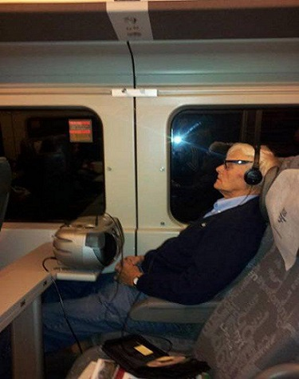

Artists I’ve Been Listening To
Here’s a list of some artists I’ve been enjoying recently:
- Lana Del Rey
- Lady Gaga
- Adele
- Paramore
- Rex Orange County
- Avril Lavigne
- Katy Perry
- Green Day
- Sleeping with Sirens
- Secondhand Serenade
- Ricky Montgomery
- Lil Peep
- The Weeknd
- FM Static
- Cueshé
- Radiohead
- Beach Bunny
- Daniel Caesar
- Chase Atlantic
- Parokya ni Edgar
- Steve Lacy
- Missing Filemon
- Rico Blanco
